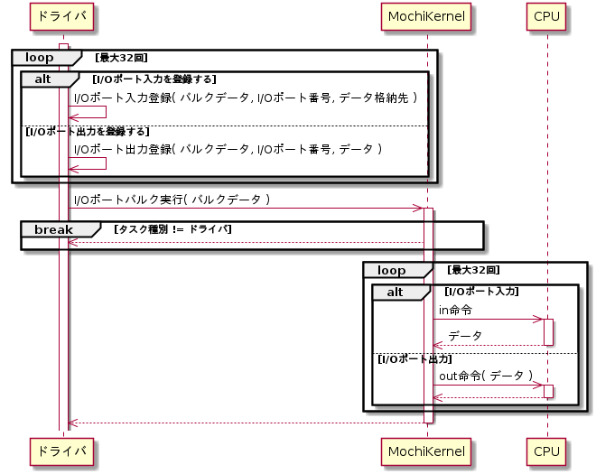

入出力制御機能
MochiKernelは全てのタスクにデバイスを直接制御することを禁止します。代わりに、ドライバタスクにデバイスの入出力制御機能を提供します。サーバタスクとユーザタスクは本機能を使用することはできません。
ポートマップドI/O制御
IA-32アーキテクチャのポートマップドI/O機能を用いて入出力を行います。
I/Oポート入力
指定したI/Oポート番号から指定した回数のin命令を実行して、データを入力します。入力1回分のデータサイズは8bit、16bit、32bitに対応します。
I/Oポート入力シーケンス
I/Oポート出力
指定したI/Oポート番号に指定した回数のout命令を実行して、データを出力します。出力1回分のデータサイズは8bit、16bit、32bitに対応します。
I/Oポート出力シーケンス
I/Oポートバルク入出力
I/Oポートのデータ入出力をまとめて行います。データの入出力はバルクデータを用いて行います。バルクデータには、入出力するI/Oポート番号、サイズ、および、データ出力を行う場合はその出力値を順番に登録します。

I/Oポートバルク入出力シーケンス
I/Oポートバルク入出力シーケンス
メモリマップドI/O制御
IA-32アーキテクチャのメモリマップドI/O機能を用いて入出力を行います。ドライバプロセスはMochiKernelを用いてI/Oメモリ領域を自身の仮想メモリ領域に割当てた後、通常のメモリアクセス方法で入出力を行います。
I/Oメモリ領域割当て
I/Oメモリ領域をドライバプロセスの仮想メモリ領域に割当てます。
I/Oメモリ領域解放
割り当てていたI/Oメモリ領域を解放します。